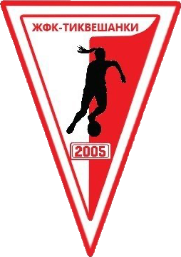

Skopje 2014 vs Tikvešanki
Liga Femenina Cadete 25/26 - Jornada 3
Resultado final : 8 - 0
Fecha: 27.09.2025 | Hora: 16:00 | Estadio: Igralište Jovan Mandarovski
Árbitras
- Árbitra: Anastasija Brajkovska
- 1.ª asistente: Jovana Maksimovska
- 2.ª asistente: Teodora Krstevska
Alineaciones

Once inicial
- 1. Anja Vasilevska üߧ
- 3. Vanja Zakovska ↓32'
- 4. Martina Stefanovska
- 5. Teona Stojanoska ⚽︎ 20' ⚽︎ 33' ⚽︎ 37' ⚽︎ 48'
- 6. Nina Despotovska ↓32'
- 8. Katerina Hristova
- 9. Lea Atanasovska ⚽︎ 45' ⚽︎ 58'
- 11. Glorija Todorova (C)
- 14. Meral Zendeli ⚽︎ 12'
- 17. Anja Stojanova
- 18. Ina Prčoska
Suplentes
- 12. Eva Stamenkovska üߧ
- 2. Angelina Trajkovska
- 15. Elena Manevska ↑32'
- 16. Tea Kovačeva ↑32'
- 19. Matea Piruze
- 20. Igora Gjorgjievska
- 23. Dilara Ademi
- 24. Teodora Mitrevski
- 25. Fotina Naumoska

Tikvešanki
Once inicial
- 1. Maria Arizanova üߧ
- 2. Hristina Kamčeva
- 3. Teodora Pavlova
- 4. Kristina Kostova
- 5. Aleksandra Adžieva
- 6. Marija Ilieska
- 7. Nataša Jančeva ↓45'
- 8. Marija Kostova ↓45'
- 9. Kristina Meglenova (C)
- 10. Ljubica Nastova
- 11. Mila Kjimova
Suplentes
- 13. Aleksandra Stojanova ↑45'
- 14. Melani Milkova
- 15. Svetlana Ilčeva
- 16. Milica Ristova üߧ ↑45'
- 17. Viktorija Ristova
- 18. Angela Gjorgjieva
- 19. Rahela Hamza
Cronología
- ⚽ 12' - Gol de Meral Zendeli (Skopje 2014)
- ⚽ 20' - Gol de Teona Stojanoska (Skopje 2014)
- üîÑ 32' - Cambio en el Skopje 2014: entra Elena Manevska (15) por Nina Despotovska (6)
- üîÑ 32' - Cambio en el Skopje 2014: entra Tea Kovaƒçeva (16) por Vanja Zakovska (3)
- ⚽ 33' - Gol de Teona Stojanoska (Skopje 2014)
- ⚽ 37' - Gol de Teona Stojanoska (Skopje 2014)
- ⚽ 45' - Gol de Lea Atanasovska (Skopje 2014)
- üîÑ 45' - Cambio en el Tikve≈°anki: entra Aleksandra Stojanova (13) por Marija Kostova (8)
- üîÑ 45' - Cambio en el Tikve≈°anki: entra Milica Ristova (16) por Nata≈°a Janƒçeva (7)
- ⚽ 48' - Gol de Teona Stojanoska (Skopje 2014)
- ⚽ 55' - Gol en propia puerta de Hristina Kamčeva (Tikvešanki) a favor de Skopje 2014
- ⚽ 58' - Gol de Lea Atanasovska (Skopje 2014)